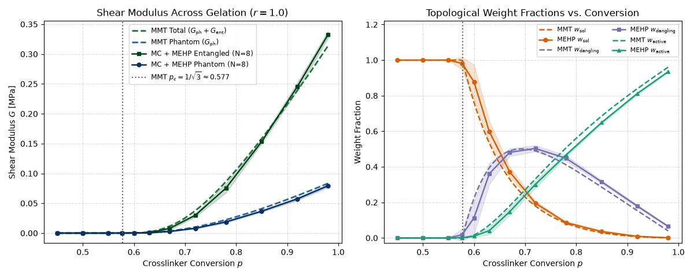
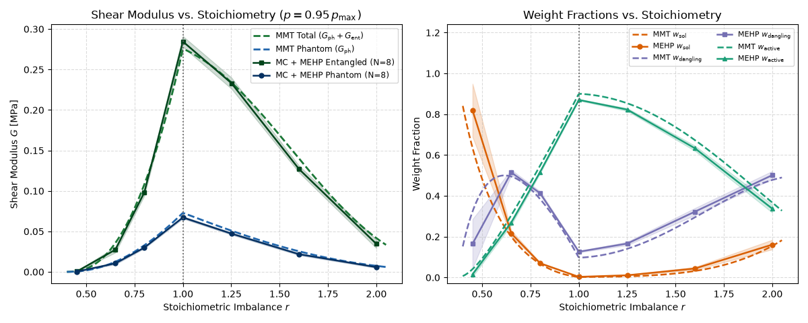
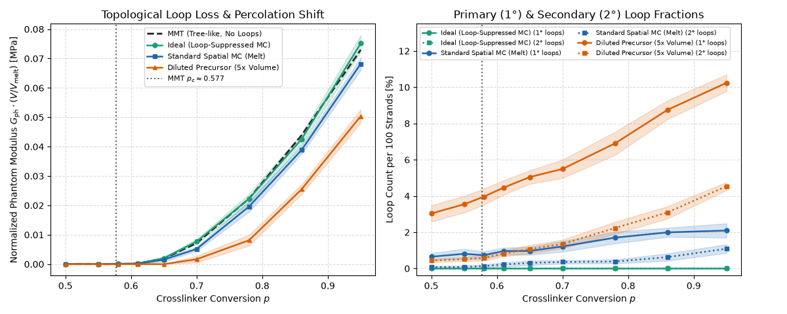
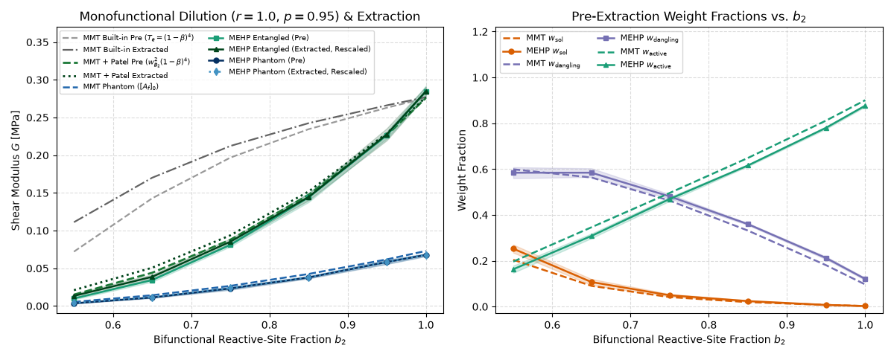

Note
Go to the end to download the full example code.
Mean-Field Theory (MMT) vs. Spatial MC + MEHP Across Gelation & Loop Regimes¶
Miller–Macosko recursive probability theory (MMT, Macosko and Miller [MM76a],
Miller and Macosko [MM76b], Miller et al. [MVM79]) provides closed-form
mean-field predictions for the gelation threshold, soluble/dangling/active weight
fractions, and equilibrium shear modulus of end-linked polymer networks
(Gusev and Schwarz [GS22], Tsimouri et al. [TSBG24]). Because MMT
treats the network as an infinite, loop-free Bethe tree, comparing its predictions
against explicit 3D spatial networks generated with
MCUniverseGenerator and evaluated with
MEHPSimulator (Gusev [Gus19],
Bernhard and Gusev [BG25], Bernhard et al. [BSG25]) reveals
both where mean-field theory excels and where spatial loops, dilution, and
monofunctional dilution cause systematic deviations.
Using realistic PDMS Gaussian bead-spring parameters
(GAUSSIAN,
\(f = 4\), \(N = 50\) beads per strand, \(N_{\text{strands}} = 1500\),
\(L \approx 32.4\,\text{nm}\), averaged over 8 independent seeds with 95%
Student’s \(t\) confidence intervals), we investigate four regimes:
Gelation conversion sweep \(p \in [0.45, 0.98]\) across \(p_c = 1 / \sqrt{f - 1} \approx 0.577\) at stoichiometry (\(r = 1.0\)),
Stoichiometric imbalance sweep \(r \in [0.45, 2.00]\) at \(p = 0.95\,p_{\max}(r, f)\),
Loop & dilution breakdown comparing loop-suppressed MC, standard melt MC, and a \(5\times\) diluted precursor across \(p \in [0.50, 0.95]\), and
Monofunctional chains (:math:`b_2 < 1`) & post-extraction deswelling, comparing
compute_extracted_modulus()and Patel et al. [PMC+92] trapping againstremove_soluble_fraction().
from pathlib import Path
import sys
from typing import Any
import matplotlib.pyplot as plt
import numpy as np
if "__file__" in globals():
_examples_dir = str(Path(__file__).resolve().parents[1])
_fb_dir = str(Path(__file__).resolve().parent)
for _p in (_examples_dir, _fb_dir):
if _p not in sys.path:
sys.path.insert(0, _p)
from _example_cache import ( # noqa: E402
format_benchmark_footnote,
get_example_cache_path,
load_or_compute_cache,
)
from _mmt_gelation_runner import run_mmt_vs_mehp_study # noqa: E402
from pylimer_tools.calc import miller_macosko_theory as mmt # noqa: E402
from pylimer_tools.io.bead_spring_parameter_provider import ( # noqa: E402
ParameterType,
Parameters,
get_parameters_for_polymer,
)
import pylimer_tools_cpp as pt # noqa: E402
def _plot_band(
ax: plt.Axes,
x: np.ndarray,
mean: np.ndarray,
ci: np.ndarray,
fmt: str,
color: str,
label: str,
) -> None:
"""Plot ensemble mean with shaded 95% CI band and error bars."""
ax.plot(x, mean, fmt, color=color, linewidth=1.8, markersize=5, label=label)
ax.fill_between(x, mean - ci, mean + ci, color=color, alpha=0.18)
Quick API Demo: Analytical MMT vs. Single Spatial MC + MEHP Realization¶
First, we evaluate a single stoichiometric PDMS network (\(N = 50\),
\(p = 0.92\)) using both the analytical MMT functions and 3D spatial
MC + MEHP in phantom (EntanglementMode.NONE) and entangled
(EntanglementMode.MERGED_LINKS) modes.
params = get_parameters_for_polymer("PDMS", parameter_type=ParameterType.GAUSSIAN)
assert isinstance(params, Parameters)
ureg = params.get_unit_registry()
dist_unit = params.get("distance_units")
b = float(params.get("<b>").to(dist_unit).magnitude)
b2_ms = float(params.get("<b^2>").to(dist_unit**2).magnitude)
r02 = float(params.get("R02").to(dist_unit**2).magnitude)
gamma_conv = float(params.get_gamma_conversion_factor().to("MPa").magnitude)
n_strands_demo, n_beads_demo, p_demo = 400, 50, 0.92
n_xlinks_demo = n_strands_demo // 2
vol_demo = (n_strands_demo * n_beads_demo + n_xlinks_demo) / params.get_bead_density()
box_l_demo = vol_demo ** (1.0 / 3.0)
gen_demo = pt.MCUniverseGenerator(box_l_demo, box_l_demo, box_l_demo)
gen_demo.set_seed(42)
gen_demo.config_nr_of_mc_steps(0)
gen_demo.set_bead_distance(b)
gen_demo.set_mean_squared_bead_distance(b2_ms)
gen_demo.add_crosslinkers(n_xlinks_demo, 4)
gen_demo.add_strands(n_strands_demo, [n_beads_demo] * n_strands_demo)
gen_demo.link_strands_to_conversion(p_demo)
fb_ph_demo = gen_demo.get_mehp_simulator(
entanglement_mode=pt.EntanglementMode.NONE, crosslinker_type=2
)
fb_ph_demo.run()
g_ph_demo = gamma_conv * float(np.sum(fb_ph_demo.get_gamma_factors(r02))) / vol_demo
es_demo = gen_demo.sample_entanglements(
int(params.get_entanglement_density() * vol_demo),
params.get_sampling_cutoff(),
seed="mmt_demo",
filtering_mode=pt.EntanglementFilteringMode.OMIT_INACTIVE,
)
fb_en_demo = gen_demo.get_mehp_simulator(
es_demo, entanglement_mode=pt.EntanglementMode.MERGED_LINKS, crosslinker_type=2
)
fb_en_demo.run()
g_en_demo = gamma_conv * float(np.sum(fb_en_demo.get_gamma_factors(r02))) / vol_demo
g_mmt_ph_q, g_mmt_en_q, _, _ = mmt.compute_modulus_decomposition(
ureg=ureg,
r=1.0,
p=p_demo,
f=4,
nu=(n_strands_demo / vol_demo) * (ureg("nm") ** -3),
temperature=params.get("T"),
g_e_1=params.get("Ge"),
)
p_c_demo = mmt.predict_gelation_point(r=1.0, f=4)
print(
f"p_c = {p_c_demo:.4f} | "
f"G_ph: MEHP={g_ph_demo:.4f} vs MMT={g_mmt_ph_q.to('MPa').magnitude:.4f} MPa | "
f"G_tot: MEHP={g_en_demo:.4f} vs MMT={(g_mmt_ph_q + g_mmt_en_q).to('MPa').magnitude:.4f} MPa"
)
cache_path = get_example_cache_path(
"mmt_vs_mehp_gelation_and_loops_cache.npz", "force_balance"
)
data: dict[str, Any] = load_or_compute_cache(cache_path, run_mmt_vs_mehp_study)
n_repeats = int(data["n_repeats"])
p_c_stoich = float(data["p_c_stoich"])
p_c = 0.5774 | G_ph: MEHP=0.0562 vs MMT=0.0628 MPa | G_tot: MEHP=0.2379 vs MMT=0.2392 MPa
Loading cached example data from mmt_vs_mehp_gelation_and_loops_cache.npz...
1. Conversion Sweep Across the Gel Point (\(p_c = 1/\sqrt{3}\))¶
At stoichiometric balance (\(r = 1.0\), \(f = 4\)), mean-field theory predicts gelation at \(p_c = [r(f - 1)]^{-1/2} \approx 0.5774\) (Venkataraman et al. [VCC+89]). Above \(p_c\), MMT captures both the phantom crosslink modulus and the Langley-trapped entanglement contribution (Langley [Lan68], Gusev and Schwarz [GS22]).
In 3D spatial MC + MEHP, intramolecular primary and secondary loops shift the effective percolation threshold slightly above \(p_c\) (yielding a higher soluble fraction \(w_{\text{sol}}\) near \(p \in [0.58, 0.72]\), as also noted by Tsimouri et al. [TSBG24]), while at high conversion (\(p \ge 0.85\)) both \(G_{\text{phantom}}\) and \(G_{\text{total}}\) agree closely with MMT.
fig1, (ax1_mod, ax1_frac) = plt.subplots(1, 2, figsize=(12, 4.8))
p_fine = data["p_fine"]
p_sweep = data["p_sweep"]
ax1_mod.plot(
p_fine,
data["p_mmt_fine_tot"],
"--",
color="#1b7837",
linewidth=2.0,
label="MMT Total ($G_{\\mathrm{ph}} + G_{\\mathrm{ent}}$)",
)
ax1_mod.plot(
p_fine,
data["p_mmt_fine_ph"],
"--",
color="#2166ac",
linewidth=2.0,
label="MMT Phantom ($G_{\\mathrm{ph}}$)",
)
_plot_band(
ax1_mod,
p_sweep,
data["p_g_en_mean"],
data["p_g_en_ci"],
"s-",
"#00441b",
f"MC + MEHP Entangled (N={n_repeats})",
)
_plot_band(
ax1_mod,
p_sweep,
data["p_g_ph_mean"],
data["p_g_ph_ci"],
"o-",
"#053061",
f"MC + MEHP Phantom (N={n_repeats})",
)
ax1_mod.axvline(
p_c_stoich,
color="#636363",
linestyle=":",
linewidth=1.5,
label=rf"MMT $p_c = 1/\sqrt{{3}} \approx {p_c_stoich:.3f}$",
)
ax1_mod.set_xlabel(r"Crosslinker Conversion $p$")
ax1_mod.set_ylabel(r"Shear Modulus $G$ [MPa]")
ax1_mod.set_title("Shear Modulus Across Gelation ($r = 1.0$)")
ax1_mod.grid(True, linestyle="--", alpha=0.45)
ax1_mod.legend(fontsize=8.5, frameon=True)
for key_mmt, key_sim, color, marker, label in (
("p_mmt_fine_w_sol", "p_w_sol", "#d95f02", "o-", r"$w_{\mathrm{sol}}$"),
("p_mmt_fine_w_dang", "p_w_dang", "#7570b3", "s-", r"$w_{\mathrm{dangling}}$"),
("p_mmt_fine_w_act", "p_w_act", "#1b9e77", "^-", r"$w_{\mathrm{active}}$"),
):
ax1_frac.plot(
p_fine,
data[key_mmt],
"--",
color=color,
linewidth=1.8,
label=f"MMT {label}",
)
_plot_band(
ax1_frac,
p_sweep,
data[f"{key_sim}_mean"],
data[f"{key_sim}_ci"],
marker,
color,
f"MEHP {label}",
)
ax1_frac.axvline(p_c_stoich, color="#636363", linestyle=":", linewidth=1.5)
ax1_frac.set_xlabel(r"Crosslinker Conversion $p$")
ax1_frac.set_ylabel("Weight Fraction")
ax1_frac.set_title("Topological Weight Fractions vs. Conversion")
ax1_frac.set_ylim(-0.03, 1.22)
ax1_frac.grid(True, linestyle="--", alpha=0.45)
ax1_frac.legend(fontsize=8.0, ncol=2, loc="upper right", frameon=True)
fig1.tight_layout()
plt.show()

2. Stoichiometric Imbalance (\(r\)) Sweep¶
Varying the stoichiometric ratio \(r = f N_{\text{xlinks}} / (2 N_{\text{strands}})\) across \(r \in [0.45, 2.00]\) at 95% of maximum stoichiometric conversion (\(p = 0.95 \min(1, 1/r)\)) produces an asymmetric modulus peak at \(r = 1.0\). Under crosslinker deficiency (\(r < 1\)), excess free strand ends remain unreacted, rapidly elevating \(w_{\text{sol}}\) and \(w_{\text{dangling}}\). Near the percolation boundary (\(r = 0.45\), where \(p_c = 0.861\) vs. \(p = 0.950\)), spatial loops push the simulated \(w_{\text{sol}}\) significantly above MMT’s tree-like value.
fig2, (ax2_mod, ax2_frac) = plt.subplots(1, 2, figsize=(12, 4.8))
r_fine = data["r_fine"]
r_targets = data["r_targets"]
ax2_mod.plot(
r_fine,
data["r_mmt_fine_tot"],
"--",
color="#1b7837",
linewidth=2.0,
label="MMT Total ($G_{\\mathrm{ph}} + G_{\\mathrm{ent}}$)",
)
ax2_mod.plot(
r_fine,
data["r_mmt_fine_ph"],
"--",
color="#2166ac",
linewidth=2.0,
label="MMT Phantom ($G_{\\mathrm{ph}}$)",
)
_plot_band(
ax2_mod,
r_targets,
data["r_g_en_mean"],
data["r_g_en_ci"],
"s-",
"#00441b",
f"MC + MEHP Entangled (N={n_repeats})",
)
_plot_band(
ax2_mod,
r_targets,
data["r_g_ph_mean"],
data["r_g_ph_ci"],
"o-",
"#053061",
f"MC + MEHP Phantom (N={n_repeats})",
)
ax2_mod.axvline(1.0, color="#636363", linestyle=":", linewidth=1.3)
ax2_mod.set_xlabel(r"Stoichiometric Imbalance $r$")
ax2_mod.set_ylabel(r"Shear Modulus $G$ [MPa]")
ax2_mod.set_title(r"Shear Modulus vs. Stoichiometry ($p = 0.95\,p_{\max}$)")
ax2_mod.grid(True, linestyle="--", alpha=0.45)
ax2_mod.legend(fontsize=8.5, frameon=True)
for key_mmt, key_sim, color, marker, label in (
("r_mmt_fine_w_sol", "r_w_sol", "#d95f02", "o-", r"$w_{\mathrm{sol}}$"),
("r_mmt_fine_w_dang", "r_w_dang", "#7570b3", "s-", r"$w_{\mathrm{dangling}}$"),
("r_mmt_fine_w_act", "r_w_act", "#1b9e77", "^-", r"$w_{\mathrm{active}}$"),
):
ax2_frac.plot(
r_fine,
data[key_mmt],
"--",
color=color,
linewidth=1.8,
label=f"MMT {label}",
)
_plot_band(
ax2_frac,
r_targets,
data[f"{key_sim}_mean"],
data[f"{key_sim}_ci"],
marker,
color,
f"MEHP {label}",
)
ax2_frac.axvline(1.0, color="#636363", linestyle=":", linewidth=1.3)
ax2_frac.set_xlabel(r"Stoichiometric Imbalance $r$")
ax2_frac.set_ylabel("Weight Fraction")
ax2_frac.set_title("Weight Fractions vs. Stoichiometry")
ax2_frac.set_ylim(-0.03, 1.24)
ax2_frac.grid(True, linestyle="--", alpha=0.45)
ax2_frac.legend(fontsize=8.0, ncol=2, loc="upper right", frameon=True)
fig2.tight_layout()
plt.show()

3. Loop & Dilution Breakdown Regime¶
To isolate the topological cost of intramolecular loops from trivial volume dilution (\(G \propto 1/V\)), we compare three MC regimes across \(p \in [0.50, 0.95]\):
Ideal loop-suppressed MC:
config_primary_loop_probability(0.0)andconfig_secondary_loop_probability(0.0)enforce zero 1st- and 2nd-order cycles, closely tracking tree-like MMT.Standard spatial MC (melt): spatial proximity yields ~2% primary loops and ~1% secondary loops per strand at \(p = 0.95\), mildly depressing \(G_{\text{ph}}\).
Diluted precursor (:math:`5times` volume): same molecule count in \(5\times\) volume suppresses intermolecular encounters while keeping intramolecular end-to-end proximity intact. Primary loops surge to ~11% per strand, wasting crosslink functionality, shifting the effective gel point upward to \(p_c^{\text{eff}} \approx 0.72\text{--}0.75 > p_c^{\text{MMT}}\), and severely depressing the concentration-normalized phantom modulus \(G_{\text{ph}} \cdot (V / V_{\text{melt}})\) (Gusev and Schwarz [GS19]).
fig3, (ax3_mod, ax3_loops) = plt.subplots(1, 2, figsize=(12, 4.8))
loop_p = data["loop_p_sweep"]
regime_labels = [str(lbl) for lbl in data["loop_regime_labels"]]
regime_colors = ["#1b9e77", "#2166ac", "#d95f02"]
regime_markers = ["o-", "s-", "^-"]
ax3_mod.plot(
loop_p,
data["loop_mmt_ph"],
"--",
color="#252525",
linewidth=2.0,
label="MMT (Tree-like, No Loops)",
)
for idx, (lbl, col, fmt) in enumerate(
zip(regime_labels, regime_colors, regime_markers)
):
_plot_band(
ax3_mod,
loop_p,
data["loop_g_ph_norm_mean"][idx],
data["loop_g_ph_norm_ci"][idx],
fmt,
col,
lbl,
)
ax3_mod.axvline(
p_c_stoich,
color="#636363",
linestyle=":",
linewidth=1.5,
label=rf"MMT $p_c \approx {p_c_stoich:.3f}$",
)
ax3_mod.set_xlabel(r"Crosslinker Conversion $p$")
ax3_mod.set_ylabel(
r"Normalized Phantom Modulus $G_{\mathrm{ph}} \cdot (V / V_{\mathrm{melt}})$ [MPa]"
)
ax3_mod.set_title("Topological Loop Loss & Percolation Shift")
ax3_mod.grid(True, linestyle="--", alpha=0.45)
ax3_mod.legend(fontsize=8.0, frameon=True)
for idx, (lbl, col) in enumerate(zip(regime_labels, regime_colors)):
prim_pct = 100.0 * data["loop_prim_frac_mean"][idx]
prim_ci = 100.0 * data["loop_prim_frac_ci"][idx]
sec_pct = 100.0 * data["loop_sec_frac_mean"][idx]
sec_ci = 100.0 * data["loop_sec_frac_ci"][idx]
_plot_band(
ax3_loops,
loop_p,
prim_pct,
prim_ci,
"o-",
col,
f"{lbl} (1° loops)",
)
_plot_band(
ax3_loops,
loop_p,
sec_pct,
sec_ci,
"s:",
col,
f"{lbl} (2° loops)",
)
ax3_loops.axvline(p_c_stoich, color="#636363", linestyle=":", linewidth=1.5)
ax3_loops.set_xlabel(r"Crosslinker Conversion $p$")
ax3_loops.set_ylabel("Loop Count per 100 Strands [%]")
ax3_loops.set_title("Primary (1°) & Secondary (2°) Loop Fractions")
ax3_loops.set_ylim(-0.4, 13.5)
ax3_loops.grid(True, linestyle="--", alpha=0.45)
ax3_loops.legend(fontsize=7.2, ncol=2, loc="upper left", frameon=True)
fig3.tight_layout()
plt.show()

4. Monofunctional Chains (\(b_2 < 1\)) & Post-Extraction Deswelling¶
Mixing bifunctional \(B_2\) chains with monofunctional \(B_1\)
dangling-end chains (add_monofunctional_strands())
at fixed reactive stoichiometry \(r = f N_{A_f} / (2 N_{B_2} + N_{B_1}) = 1.0\)
and \(p = 0.95\) reduces the fraction of bifunctional reactive sites
\(b_2 \in [0.55, 1.0]\).
Extracting the soluble fraction via
remove_soluble_fraction() with
rescale_box=True deswells the network back to melt density by shrinking
the box volume by \((1 - w_{\text{sol}})\), increasing \(G_{\text{ph}}\)
by \((1 - w_{\text{sol}})^{-1/3}\) (whereas rescale_box=False leaves
\(G_{\text{ph}}\) unchanged) and concentrating trapped entanglements by
\((1 - w_{\text{sol}})^{-2}\) (compute_extracted_modulus()).
Notably, comparing MMT against MC + MEHP exposes an important implementation
distinction: pylimer-tools’s
compute_trapping_factor()
computes \(T_e = (1 - \beta)^4\) assuming long \(B_2\) chains without
the polymer weight-fraction dilution factor \(w_{B_2}^2\) derived by
Patel et al. [PMC+92]. Including \(w_{B_2}^2 (1 - \beta)^4\) brings
the analytical entanglement prediction into quantitative agreement with
spatial MC + MEHP across the full \(b_2\) range.
fig4, (ax4_mod, ax4_frac) = plt.subplots(1, 2, figsize=(12, 4.8))
b2_vals = data["b2_targets"]
ax4_mod.plot(
b2_vals,
data["b2_mmt_tot_builtin"],
"--",
color="#999999",
linewidth=1.6,
label=r"MMT Built-in Pre ($T_e=(1-\beta)^4$)",
)
ax4_mod.plot(
b2_vals,
data["b2_mmt_ext_builtin"],
"-.",
color="#636363",
linewidth=1.6,
label=r"MMT Built-in Extracted",
)
ax4_mod.plot(
b2_vals,
data["b2_mmt_tot_patel"],
"--",
color="#1b7837",
linewidth=2.0,
label=r"MMT + Patel Pre ($w_{B_2}^2(1-\beta)^4$)",
)
ax4_mod.plot(
b2_vals,
data["b2_mmt_ext_patel"],
":",
color="#00441b",
linewidth=2.0,
label=r"MMT + Patel Extracted",
)
ax4_mod.plot(
b2_vals,
data["b2_mmt_ph_junc"],
"--",
color="#2166ac",
linewidth=1.8,
label=r"MMT Phantom ($[A_f]_0$)",
)
_plot_band(
ax4_mod,
b2_vals,
data["b2_g_en_pre_mean"],
data["b2_g_en_pre_ci"],
"s-",
"#1b9e77",
"MEHP Entangled (Pre)",
)
_plot_band(
ax4_mod,
b2_vals,
data["b2_g_en_ext_rescaled_mean"],
data["b2_g_en_ext_rescaled_ci"],
"^-",
"#00441b",
"MEHP Entangled (Extracted, Rescaled)",
)
_plot_band(
ax4_mod,
b2_vals,
data["b2_g_ph_pre_mean"],
data["b2_g_ph_pre_ci"],
"o-",
"#053061",
"MEHP Phantom (Pre)",
)
_plot_band(
ax4_mod,
b2_vals,
data["b2_g_ph_ext_rescaled_mean"],
data["b2_g_ph_ext_rescaled_ci"],
"d:",
"#4393c3",
"MEHP Phantom (Extracted, Rescaled)",
)
ax4_mod.set_xlabel(r"Bifunctional Reactive-Site Fraction $b_2$")
ax4_mod.set_ylabel(r"Shear Modulus $G$ [MPa]")
ax4_mod.set_title(r"Monofunctional Dilution ($r=1.0$, $p=0.95$) & Extraction")
ax4_mod.set_ylim(-0.01, 0.37)
ax4_mod.grid(True, linestyle="--", alpha=0.45)
ax4_mod.legend(fontsize=7.0, ncol=2, frameon=True, loc="upper left")
for key_mmt, key_sim, color, marker, label in (
("b2_mmt_w_sol", "b2_w_sol", "#d95f02", "o-", r"$w_{\mathrm{sol}}$"),
("b2_mmt_w_dang", "b2_w_dang", "#7570b3", "s-", r"$w_{\mathrm{dangling}}$"),
("b2_mmt_w_act", "b2_w_act", "#1b9e77", "^-", r"$w_{\mathrm{active}}$"),
):
ax4_frac.plot(
b2_vals,
data[key_mmt],
"--",
color=color,
linewidth=1.8,
label=f"MMT {label}",
)
_plot_band(
ax4_frac,
b2_vals,
data[f"{key_sim}_mean"],
data[f"{key_sim}_ci"],
marker,
color,
f"MEHP {label}",
)
ax4_frac.set_xlabel(r"Bifunctional Reactive-Site Fraction $b_2$")
ax4_frac.set_ylabel("Weight Fraction")
ax4_frac.set_title(r"Pre-Extraction Weight Fractions vs. $b_2$")
ax4_frac.set_ylim(-0.03, 1.22)
ax4_frac.grid(True, linestyle="--", alpha=0.45)
ax4_frac.legend(fontsize=8.0, ncol=2, loc="upper left", frameon=True)
fig4.tight_layout()
plt.show()

5. Summary of MMT Scope & Limitations in pylimer-tools¶
When applying pylimer_tools.calc.miller_macosko_theory to simulated
or experimental networks, keep the following built-in scope limits in mind:
Monodisperse :math:`A_f + B_2 / B_1` & single crosslinker type: All recursive formulas assume a single crosslinker functionality \(f\) and monodisperse precursor reactivity (one \(B_2\) / \(B_1\) pool), with each chain species (\(B_2\), \(B_1\), \(B_0\)) represented by distinct atom type(s) (inferred from crosslinker attachments or passed via
functionality_per_type={1: 2, 2: f, 4: 1}).Tree-like (no-loop) Bethe-lattice approximation: MMT ignores spatial proximity and intramolecular loops. In melts near \(p_c\) or in diluted precursors, primary and secondary loops waste crosslinker arms, shift \(p_c^{\text{eff}}\) upward, and depress \(G_{\text{ph}}\) below MMT.
Entanglement trapping & :math:`b_2 < 1` dilution prefactors: While
compute_modulus_decomposition()andcompute_junction_modulus()use the exact crosslinker density \([A_f]_0 = \frac{2 r}{f (2 - b_2)}\,\nu\) (for reactive strand density \(\nu = [B_2]_0 + [B_1]_0\)),compute_trapping_factor()evaluates \((1 - \beta)^4\) without the \(w_{B_2}^2\) dilution prefactor of Patel et al. [PMC+92].
print(format_benchmark_footnote(data))
Measured on: Apple M3 Pro (12 cores), 36 GB RAM, Mac15,7, macOS 27.2.1 (arm64), Python 3.13.18 (cached 2026-11-26).
Total running time of the script: (0 minutes 1.209 seconds)